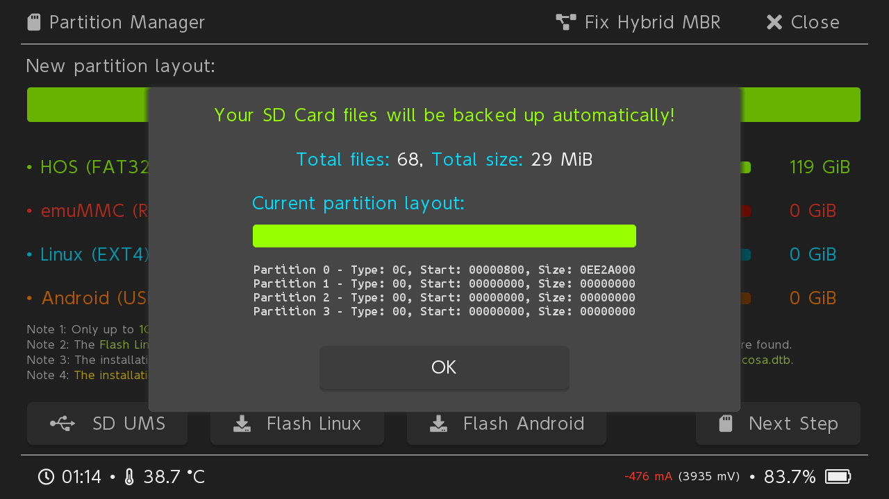
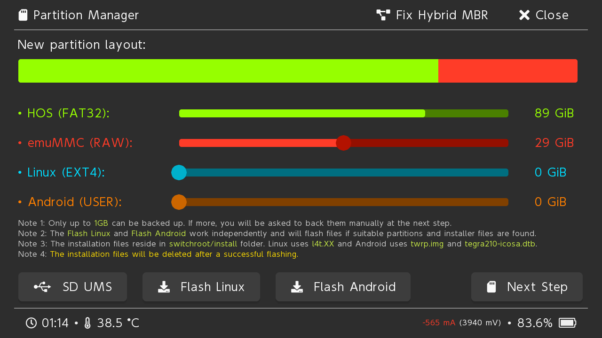
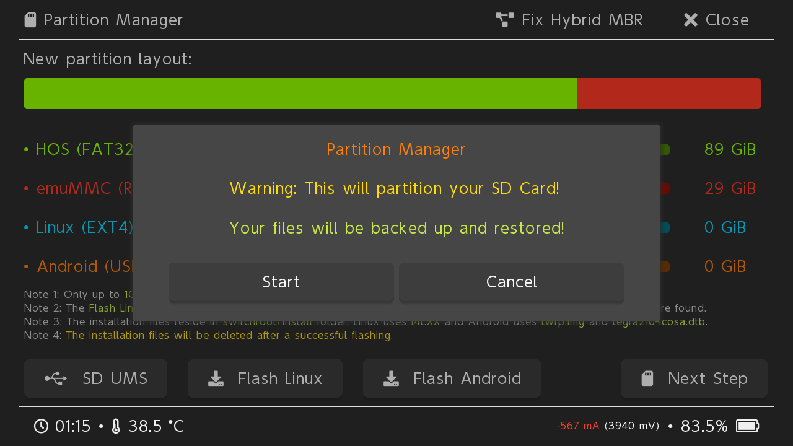
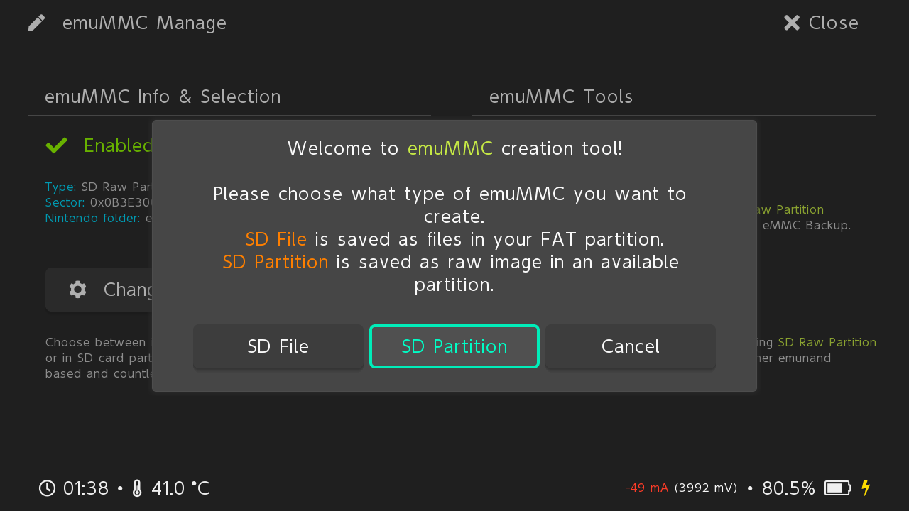
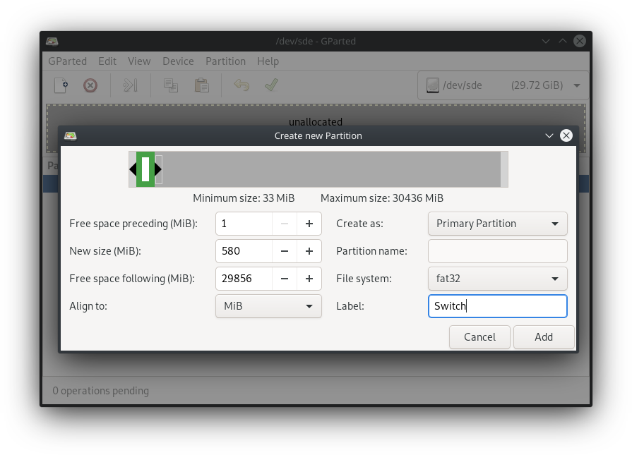
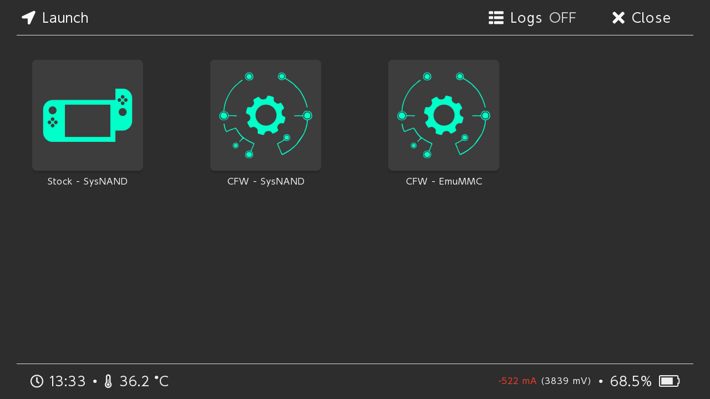
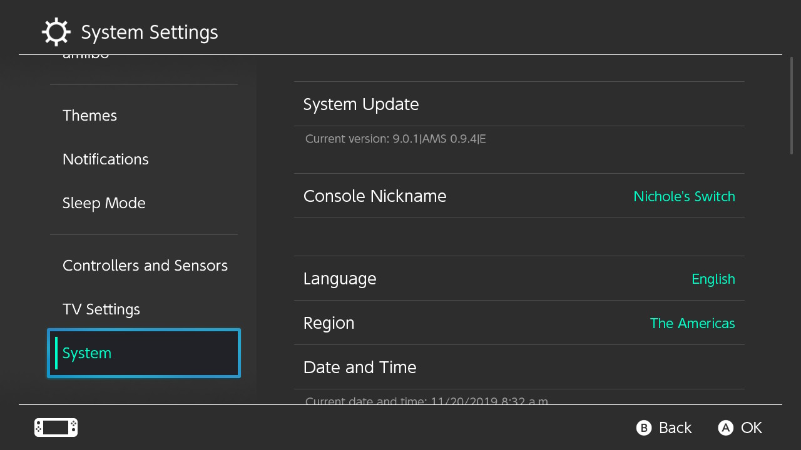

Create an emuMMC¶
Before getting started you will need the following:
A hackable Nintendo Switch.
An SD Card that is 64GB or larger.
Latest version of Atmosphere and Hekate.
Once you are ready, follow the guide below:
Launch Hekate.

Select Tools, open the bottom right table and select Partition SD Card

If you see this screen you can continue, otherwise backup the files via USB
Drag the emuMMC (RAW) slider around to match your needs. One emuMMC copy is 29856MB in size
Select Next Step, Start and wait for it to finish
Go back to the home menu and select emuMMC

Select Create emuMMC

Select SD Partition
Select the partition you want
Wait for it to finish
Tap on “Close” on the top right, tap on “Launch”, and boot into your emuMMC.
Note
If you downloaded Hekate by itself then you needed to create a hekate_ipl.ini file in your bootloader folder. That is outside the scope of this guide. If you don’t know how to do that then use the SDSetup bundle.
Congratulations you are done. You can go into “System Settings”, scroll down to “System”, and you should see an “E” at the end of your “Current version:” indicating you are in your emuMMC.
